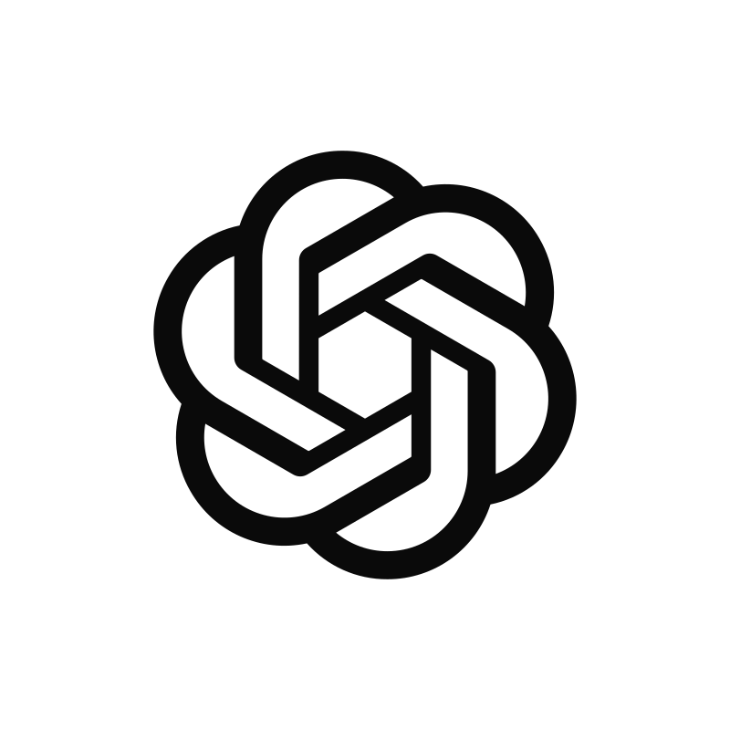

Same data in every frame: repo makit, three worktrees (one current+dirty, one with an open PR
and a session awaiting approval, one quiet), one idle session. Colours, type and spacing are the real
tokens dumped from theme.dart — including primary #98d4a3, which is what
actually ships today.

+. Two-line rows, no glass. Reads like Settings/Mail.+ for sessions.#98d4a3 that ColorScheme.fromSeed derived for the dark scheme; every
other column uses the brand green #4ADE80. Comparing “1 PR” and the footer colour
between Baseline and A was the question, and it was answered: dark-mode primary is
now pinned to #4ADE80 (10.3:1 on #171717), while light keeps the
seed-derived #316a41 because the brand green is only 1.67:1 on #FAFAFA.
Baseline is kept as the before; it is not what ships.